This project focuses on image filtering, from the how-to, like convolution, to applications, like extracting and manipulate low and high frequencies in images, and evventually image blending.
01 Filters and Edges
1.1: Convolutions from Scratch!
For both 2D convolution implementations, I preprocess by flipping the kernel and finding a ‘center’ pixel location. Then, I iterate over the output matrix to fill in values.
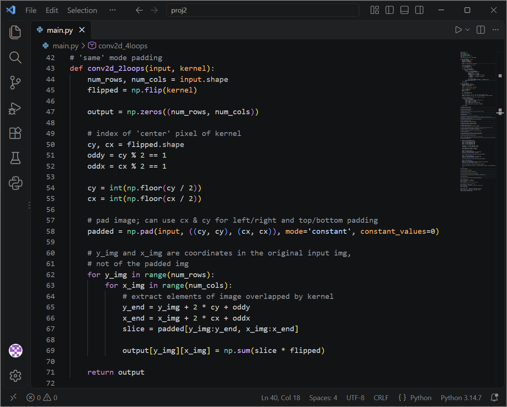
In the 4 for-loop version, the outer two loops cover the pixels of the output matrix, while the inner two loops iterate over the kernel, checking if each position is valid before accumulating values.
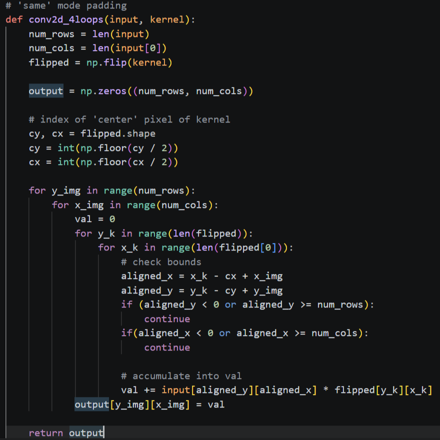
In the 2 for-loop version, I would preprocess the input image matrix (not the kernel) by padding, then slice into the padded matrix to do element-wise multiplication.
Boundaries are handled by padding with zero fill values, as specified by the specs. In the 4 for-loop version, any pixel that would be in the padding zone is simply ignored as out of bounds, while in the 2 for-loop version, the matrix slice includes an actual padding of zeroes.
Regarding runtime, the 4 for-loop version is the one with the worse performance, taking seconds each call. On the other hand, the 2 for-loop version and scipy implementations spend less than a tenth of a second, with the scipy almost halving the 2 for-loop implementation. The lines of ‘True True True’ are from checks with np.allclose(...) comparing the results of convolution. scipy’s convolve2d uses mode=‘same’ and has zero padding by default.
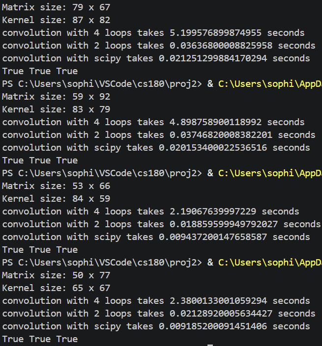
image I (me!)
box blurred
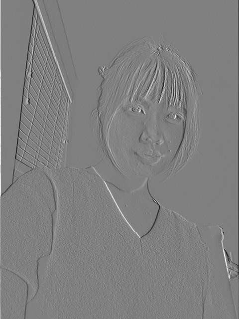
I * Dx
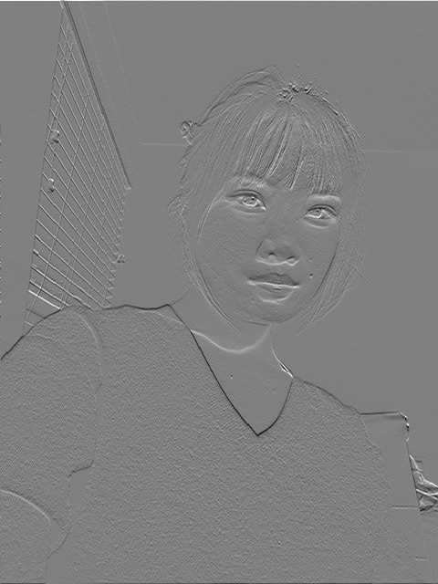
I * Dy
1.2: Finite Difference Operator
image I
I * Dx
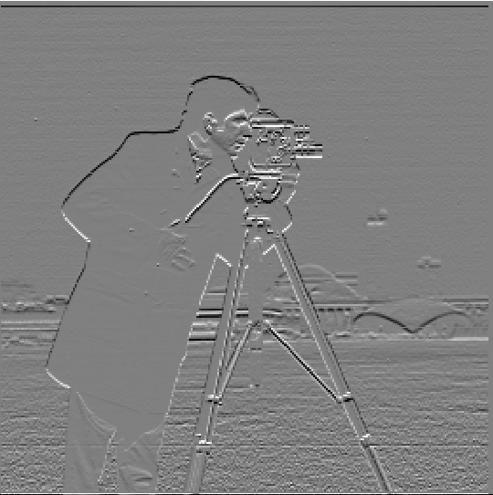
I * Dy
Each of the finite difference filters essentially computing partial derivatives, and make up the gradient. To find the magnitude of the gradient, we take the square_root(sum(squared(partial derivatives))).
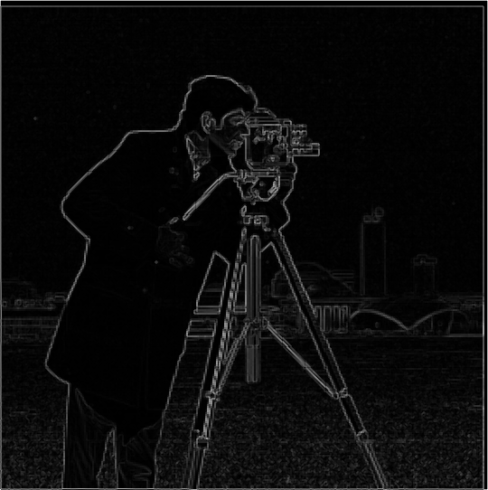
gradient magnitude
t = 0.1
t = 0.2
t = 0.3
After binarizing the gradient magnitude, I personally preferred the threshold of 0.2 (assuming the image ranges from 0:black to 1:white. Lower thresholds reveal more building detail, but leaves the grass looking very noisy. Higher thresholds make the edge lines appear to disconnect sometimes, which is also undesirable.
1.3: Derivative of Gaussian (DoG) Filter
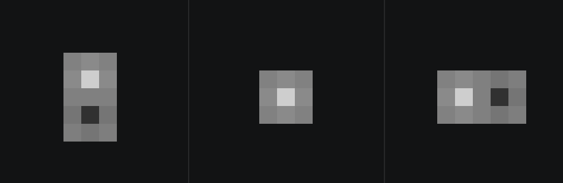
DoG_y, G, DoG_x
The derivative of Gaussian filters can be quickly found by convolving the Gaussian with the D_x and D_y filters.
(I * G) * D_xy vs I * (G * D_xy)
start! image I
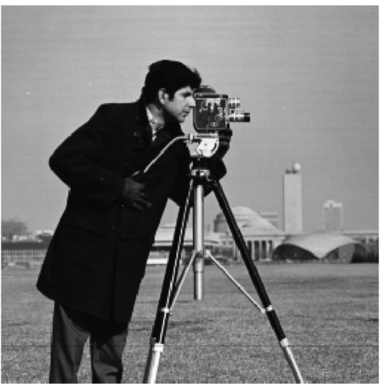
I * G
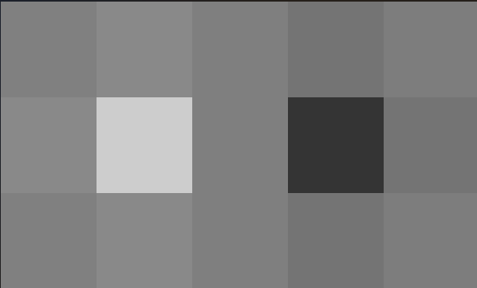
DoG_x = G * Dx
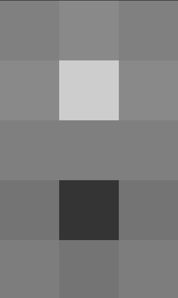
DoG_y = G * Dy
(I * G) * Dx
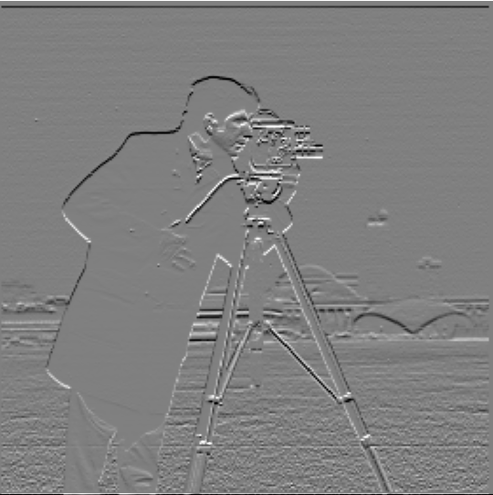
(I * G) * Dy
I * (G * Dx)
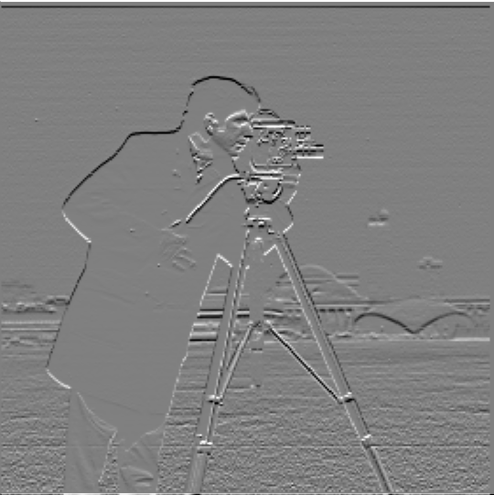
I * (G * Dy)
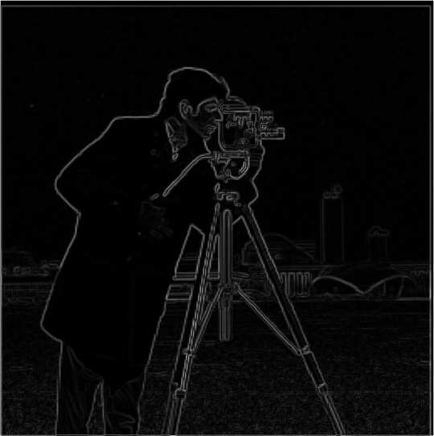
I * (G * Dx)
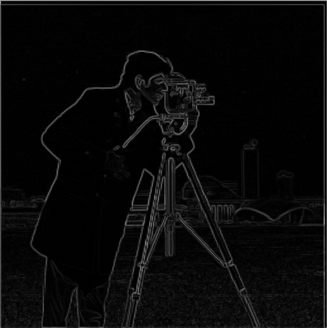
I * (G * Dy)
t = 20
t = 20
As can be seen, applying two kernel convolutions has the same effect as convolving the two kernels first, then applying the new kernel to the image. The latter is simply more efficient, because kernels tend to be smaller.
Additionally, compared to the previous part, the remaining amount of noise (in the grass) is completely removed by blurring first.
02 Applications
2.1: Image "Sharpening"
2.2: Hybrid Images
2.3: Gaussian and Laplacian Stacks
2.4: Multiresolution Blending (A.K.A. The Oraple!)